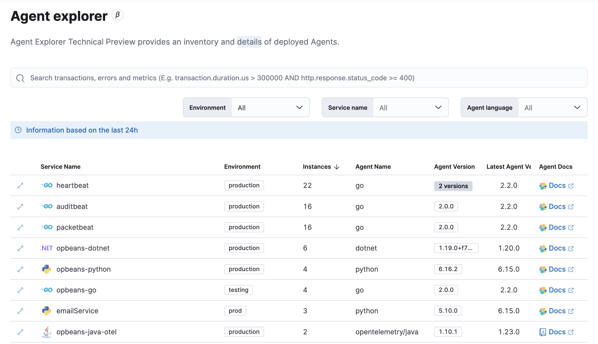
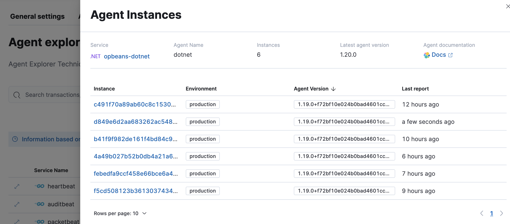

APM Agent explorer
editThis functionality is in beta and is subject to change. The design and code is less mature than official GA features and is being provided as-is with no warranties. Beta features are not subject to the support SLA of official GA features.
APM agent explorer provides a centralized panel to identify APM agent deployment details, like service name, environment, instances, and agent name, version, and documentation.

Select an APM agent to expand it and view the details of each agent instance.
